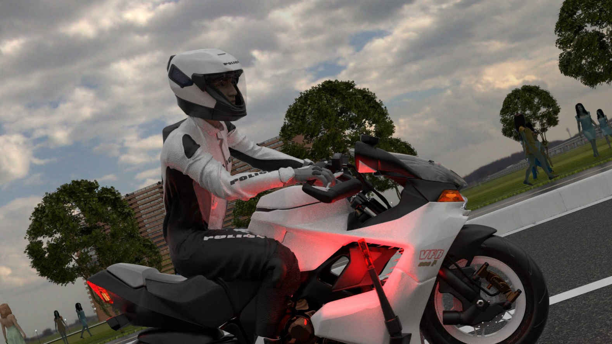
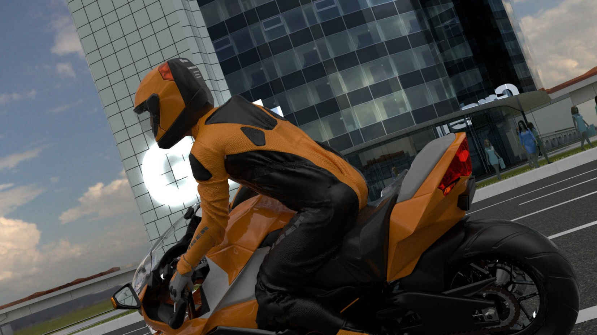
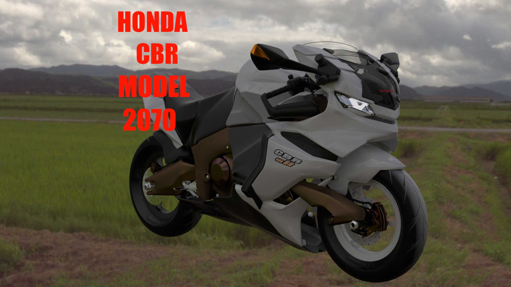

| POLICE 2070 TrafficMobileUnit 2 | |
| 相沢龍彦 | |
| (2019) | |
ＰＯＬＩＣＥ2070
Traffic Mobile Unit
相沢龍彦
どこまでも伸びる道路。
終りが無く、地平のかなたまで無限に続いているかのように、、。
だが 大人になり、私は、道に終わりがあることを知った、、。
交通機動隊 隊員 ケン。
スクリーンショット
はじめに、、。マシンの操作解説。
イントロダクション
西暦2070年。
街の様子。
高層ビルの分散化- 温暖化対策のため、原子力、火力発電はすべて廃止され、都市は電力確保のため、多くのソーラーパネルを設置するための広い土地が必要になった。
仙台駅周辺の中心部に林立していた高層ビルは郊外の土地に分散。
ここは、
仙台市中心部から北東。山沿いの利府町付近。
宮城県交通機動センター。県警交通機動隊の拠点。
仙台市周辺の全ての市を受け持つ管区とする。
県内の全ての白バイが毎日、ここから出動し、ここに戻る、、、。
第1章
「道案内？」
交通機動隊の白バイ、VFR800ポリス仕様に追われているドゥカティのライダー、テグ。彼はヘルメットの無線機から聞こえてくる男の声に対して、そう、たずねる。
すかさず、無線機を通して応答が来る、、。彼の耳に聞こえる男の声。
「そうだ、私の指示したルートどおりに走れば、君は捕まらずに逃げ切れる。」
無線の男は仙台市内の公園にいた。球を2つに割った形のベンチ。 彼はそこに座り、ひざに置いたラップトップＰＣを見ていた。
怪しいところは何一つなく。誰が見ても公園でくつろいでいるようにしか見えない。
「いきなり無線に割り込んできて、あんたは何を言ってるんだ？。」
ドゥカティのライダー、テグは前を見ながらそう言った。
かなり道路は混んでいる。前方300ｍ先に白い乗用車。その先に車列が見える。
左の車線は10ｍ先に白い2box車、その10ｍ先には黒い軽自動車、さらに10ｍ間隔でシルバーのミニバンか？。
その先,えんえんと長い車列が見える、、、。
「では、はじめまして。とでもあいさつを言えば良かったのかな？。」
男はひざに置いたラップトップＰＣが、ずり落ちそうになるのを手で押さえながら言う。
こいつ、、なんなんだ？この男は？。むっとするテグ。彼は前方を確認する。
500先の交差点の信号は青。右に右折するための専用レーンは空いている。
右手に焼肉食べ放題の黄色い看板。焼肉？、、今はそれどころじゃないよ、、。
600ｍの直線。片側2車線の車線左を走行。減速。速度は151ｋｍから132、110、93,89、80ｋｍへ徐々に下がる。直線の終わる付近では速度75ｋｍへダウン。ギアを2速から1速へシフトダウン。
左には仙台東部道路の道路案内、緑色の文字と7、仙台港の白い文字と矢印が見える。道路は1ｋｍ先で左にカーブしている。
20m先の交差点。青い2ボックス車が前の車線をふさいでいる。赤く光るテールランプ。
隣の車線にはシルバーのワゴン車。その右の車線には白いミニバン。
3車線とも車で道路はふさがれている。が青い2ボックス車とシルバーのワゴン車の間は車1台分開いている。
信号は赤。赤いＴシャツを着た歩行者が歩道からこちらを見ている。
「後ろを見たまえ。」無線の男は突然,話題を変えた。
「何？。」
「後ろを見るんだ、、、！。」無線の男は静かに強い口調で言う。
ドゥカティのライダー、テグは左のサイドミラーに視線を移す。
サイドミラーには交通機動隊の白いオートバイVFR800ポリス仕様が小さく見えている。それはケンだ、、。彼は片側2車線の道路の右側を確認していた、、。
前方は2車線共、数百ｍ先まで空いている、50ｍ先で白いミニバンが左の車線へ入って来る。
いや違う、左の車線ではない、、！車は左車線をこえてこちらの市や線へ進入してきた。前方30ｍ。
白バイの行く手をふさぐか?普通、、、。だが、左の車線は開いている。そこを通過すればいい。
ん、、100ｍ先、左の歩道に歩行者、低いバリアに腰掛けてこちらを見ている。対向車線をコカコーラの大きなバンが通過していく。
オートバイの前方20ｍには先ほどの白いミニバンがまだ走行している。いい加減、道を開けろよ、と言いたくなる。拡声器で警告でもするか、、、。
ケンの白バイの前方を走行する逃走オートバイ、ドゥカティ。無線の男はドゥカティのライダーに、話を続ける。
「白いオートバイが見えるだろう？VFR800ポリス仕様、警察の白バイだ。彼は君を捕らえようとしている。」
無線に気をとられて白バイの事を忘れていた、、、。
テグは前方を確認する。
対向車線の長い車の列が途切れ始める。200メートル先には右へ曲るゆるいカーブ。オートバイは右の追い越し車線をカーブへ進入。
対向車線を走る白いワゴン車とすれ違う。その10ｍ後ろに黒い2ボックス車が続く。
「君は君を追う後ろの白バイから逃げ切らなければならない。」
「出来るのかね？.」
無線の男は、そうたずねた。
「,,,!.」言葉が出ず、数秒の間、ハンドルを握り、前方を見つめたまま黙り込んでしまうテグ。
彼の100ｍ先に右カーブ。マシンの速度71ｋｍ。減速。速度は60ｋｍ54ｋｍへ下がる。カーブ手前100ｍ。ここで再び加速。
速度は64ｋｍから71ｋｍ、75、速度80ｋｍでカーブへ進入。
たしかに、そうだ、、、。このまま逃げ切れるかどうか、わからない、、。
ドゥカティのライダー、テグは片側2車線の右の車線からカーブ出口で左の車線へぬける走行ラインを選択する。体を右へ5度、カーブの内側方向へ傾ける。オートバイも右へ傾く。カーブ出口まで100ｍ。
いつもなら、とっくに白バイは追跡をあきらめているだろう、、、。
黒い2ボックス車とすれ違うと、100ｍむこうから白い大型のバンがやってくる。と思ったら左の車線10ｍ先を走行している白い乗用車のテールランプ（ブレーキランプ）が赤く灯る。
だが、あの白バイ隊員はいつもの連中と何か違う、、、。
白い乗用車は歩道橋手前で減速し始めた。ようやく白バイのサイレンに気がついたのか？。オートバイはその脇を通過。
カーブ出口へ進む。カーブの先左にはＮＩＳＳＡＮの看板が2つ並んでいる。白いバックに大きな赤い文字。カーブ出口付近で黒い軽自動車が左の車線へ入ろうとしている。
どうする、、、？この男を信じるか、、、？
交差点。信号が青に変わる。停車していた3台の車がいっせいに動き出す。ゆっくりと速度を上げていく車。
と思ったら30ｍほど走行して止まる。車のさらに前方に黒い車が見えてくる。
ただのいたずらとは思えない、、、。
「いいだろう、あんたの言うとおりに走ってやる。」
数秒の沈黙の後、ドゥカティのライダー、テグは無線の男にそう伝えた。
右の車線にはシルバーの車さらにその前には黄色の2ボックス車、小型車だ。
「わかった、今から安全なルートを指示する、、。」
公園のベンチに座る無線の男。
彼はひざに置いたラップトップPCの画面を指でタッチした。ＰＣのディスプレイに表示された地図が拡大していく。
そこには警察の全車両の位置と速度が標されていた。さらには、道路を走行する全ての一般車両の位置までも。
---45号線。
ドゥカティを追尾するVFR800ポリス仕様のライダー、彼は道路の前方を確認する。
信号は青。オートバイは2車線目を走行し10ｎ先の交差点に進入しようとしている。対向車線の右折用レーンに黒い軽自動車が停車している。
点滅する黄色い右のウィンカー。その隣の車線を白い中型カーゴトラックが通過。
後ろの四角い積荷を入れる部分は前のキャビン部分（運転席部分）よりも高い。中型でも高さは軽自動車の2倍はある。
その隣には白いタクシーが並走している。その中型トラックと交差点の入り口ですれ違う。前方10先には白い乗用車。プリウスだ。
その20ｍ先に白いセダンが車線をまたいで走行している。普通はそんな走行はしない。
何だ？と思ったら。隣にあの逃走オートバイが走行している。
そこにいたか、、。
逃走オートバイは自分の右車線前方30ｍ。
VFRポリス仕様、車両番号101号に乗る交通機動隊隊員、ケン。彼は右車線前方30ｍを走行する逃走オートバイを見ていた。
ヘルメットにはアイカメラＨＵＤシステムが内蔵されている。彼の視線。目で見たものがグリーンの四角い枠でヘルメットのスクリーン（透明な部分）に表示される。
対向車線を走る車を見れば、グリーンの四角い枠がその位置に。そして歩道の通行人を見ればグリーンの四角い枠はその位置に表示された。
「目標を補足。」ケンがそう言うとグリーンの四角い枠はそのオートバイに固定（ロック）された。
「速度測定。」彼は音声で指示を出すとＶＦＲ800Ｐに搭載されたレーザーセンサーが30ｍ先の逃走オートバイの速度を測定し始める。「現在速度を測定中 1秒、2秒、3秒、、 巡航速度95ｋｍ。」
「速度違反を確認。記録します。」ＶＦＲの音声ナビはそう答える。ヘルメットに内蔵されたカメラが前方を走るオートバイを録画し始めた。
2070年の現在、市民のプライバシー保護を理由に、走行中、常時撮影録画することは許可が必要だった。
特別な理由がある場合を除いて。、、、いつの時代も、政治家というのは、時々わけのわからない法律を作るものだ。

「録画開始、」とＶＦＲの音声ナビ。これで逃走オートバイの速度違反は確定した。
「どれだけ速度オーバーしてるんだ？まったく、、、。」
ＶＦＲ800ポリス仕様はやや下り坂の道路に入る。黒いタクシーが右の車線を通過していく。右の車線は開いているようだ。
その後に緑の小型車、そして白い軽トラックと続く。黄色い文字で高圧ガスのステッカーが目に付く。赤いのは消火器か？
対向車線は数百ｍ先まで車の列。こちらの車線、前方100ｍにシルバーのセダン。
その左には黒い軽自動車が走行している。路面に70の黄色い数字、それをあっという間に通過。道路の左にはピンクの花が咲いている。

あのライダー、止まらないだろうけど、とにかくやるか、、。どんな相手にでも停止指示は、出さなければならない、、。
2070年の現在、警官だからといって好き勝手は出来ないのだ。
ケンはVFR800ポリス仕様のハンドル右のスロットルグリップを回す。白バイの速度が上がる。
白バイはゆっくりと加速。前の逃走オートバイと横に並ぶ。
逃走オートバイ、ドゥヵティと VFRはかなりの高速で道路を並走している。

この間も白バイのヘルメットに内臓されたカメラは逃走オートバイとライダーを横から撮影し続けている。
センターラインの白い２本の白線。そして路面に埋め込まれた黄色で四角い路上センサーが道のはるか先まで並んでいる。それは路面の状態を感知するためのセンサーだ。大きさは１０センチほど。
自分が走行している、こちらの車線は空いている。左の歩道に歩行者無し。左の車線の白い乗用車は白バイのサイレンを気にも止めないのか。悠々と１０ｍ先を走行している。
TIGER.タイガー？新人の白バイ隊員、ケンは逃走オートバイのライダーが着ているライドスーツのロゴを見る。それは英語の大文字でTIGERと読めた。
どんなやつなんだ、、、？ケンは何とか相手の顔を確認しようとする。 しかし逃走オートバイのライダーの顔は見えない。彼は顔をおおうフルフェイスのヘルメットを被っているからだ。
VFR800ポリス仕様のライダーは前方を見る。左の歩道を歩行者が２人歩いていく。黒いパイプフェンスの列。10ｍ先で白いミニバンが左へ曲っていく。その先に仙台銀行の緑の看板。
「外部スピーカーに切り替え。」彼は音声操作でヘルメットのマイクを白バイの拡声器につなぐ。
１００ｍ先には、あれは歩道橋か？階段と道路の上を横切るデッキ部分が小さく見えた。対向車線を走る緑色の四角い１ボックス車、流行の四角いデザインが目に留まる。
先ほどの黒い大型のロングバンが左折していく。その高さは大人の身長ほどもある大きな車だ。
VFR800ポリス仕様のライダーは、停止指示を出した、、。
「そこのバイク、速度を落として、停止してください。」白バイには拡声器が搭載されている。それは走行中の相手に警告や指示を伝えるためだ。あたりに響く拡声器の声。それは100m先までとどく。
走行する2台のオートバイの前を走行する青い小型車が左折しようとしている。点滅する車体の後ろ左のウィンカー。ゆっくりと左へ曲っていく。すると、車線の前は数百メートル先まで開いている。
「白バイの停止指示かい？、無視していいぞ、、。」無線の男がそう伝える。遠く離れた公園にいる彼にも、拡声器の音が無線機のマイクを通して聞こえたようだ。
「あたりまえだろ。」当然だ、的な顔をしてドゥヵティのライダー、テグは言う。
彼は、右手でハンドル右のスロットルグリップをまわしオートバイを加速。するとオートバイの前輪が路面から跳ね上がる。
オートバイのフロント部分が上に持ち上がっていく、、！。あわててスロットルをもどす。
するとオートバイのフロント部分が下がり始める。前輪が路面に付いた。やれやれ、、。ギアは1速。速度は101ｋｍ。
センターラインの白い斜線が数百メートル先まで続いている。右手に黒いスーツと白いワイシャツを着たサラリーマンらしき歩行者が２名、駐車場へと歩いていくのが見える。
言うまでもなかったか、、。無線の男は公園のベンチに座り、右手で顔の汗をふく。気温が上がってきたのを肌で感じる。
「そこのバイク、速度を落として、停止してください。」白バイの停止指示。
「しつこいやつだな、、、。」
ドゥヵティのライダー、テグは右の追い越し車線へ入る。見ると対向車線には追突注意の文字。前方１００ｍ先には交差点をまたぐ歩道橋。交差点をライトグリーンの小型車が、対向車線から左へと曲っていこうとしている。まだ距離がある。
「今、いそがしいいんだ！。」片手でこぶしを上げるテグ。
そして彼はハンドル右のスロットルグリップを右手でまわす。
その速度を上げろという電気信号はオートバイのモーターを制御するインバーター（電子回路）に伝わる。
そしてテグのマシン、ドゥヵティのパワーユニット、水冷式コイルレスモーターの回転数が跳ね上がる！。
うなるようなモーターの金属音、、！。
カーブを出ると長い直線に入る。1ｋｍ先までまっすぐな道路。右手にオートバックスの看板、オレンジに黒い文字。
減速。速度は77ｋｍ。ここで再び加速。速度は80ｋｍから86ｋｍ、97、102、107ｋｍと上がっていく。
片側2車線の左車線の真ん中を走行。さらに加速、オートバイが500ｍ走行したときには速度115ｋｍ。
ドゥヵティのライダー、テグの左50ｍ先にはHONDAの看板がある、車を展示するショールームだ。前方30ｍ先に白いミニバンが走行している。
左の車線ははるか1ｋｍ先まで空いている。遠くに小さく見えるのは黒い軽自動車か？対向車線も車は少ない。オートバックスの前を通過。タイヤセール？今はそれどころではない、、。
急加速し速度を上げていくドゥヵティ、モデル2069、、、！。5ｍ、10ｍ、20ｍ、30ｍ、50ｍ。数秒の間にドゥヵティはどんどん白バイから離れていく。
テグは前方を確認する。
センターラインの2本の白線と黄色いセンサーが1ｋｍ先まで続いている。
遠くにホテルの建物が見える。HONDAの看板が左から後方へと流れ、あっという間に視界から消える。対向車線を車列がこちらへ向かってくる。
先頭の白いセダン、その後ろに黒い軽自動車が2台、そして白い大型ミキサー車。
と、それらの車とセンターラインをはさんですれ違う。すれ違うたびに風をきるような音、。フォン！、フォン！、フォン！、。

加速性能ではＶＦＲ800ポリス仕様はドゥヵティにかなり劣る。加速し、速度を上げたドゥヵティにケンの白バイはあっという間に距離を開けられてしまった、、。
白バイは歩道橋の下を通過。対向車線には緑のダンプトラック。その後ろにはシルバーのセダンが続く。右折用レーンにはシルバーの軽自動車その後ろに白い軽。２台ともこちらに右折するために交差点の中央で停車している。その隣を通過する。
「かー、、一瞬でこんなに差をつけられるのかよ、、、。何だあのマシン。」ぼやくＶＦＲ800ポリス仕様のライダー、ケン、、。
長距離走行性と走行安定性を重視した設計のＶＦＲ800Ｐ モデル2068に対し、ドゥヵティ、モデル2069は高速性能と運動性能を重視した設計だった。
ドゥヵティ モデル2069は その高い加速性能でさらにＶＦＲを引き離そうとする。
「あれを止めろって？、、、無理だろ、、。」
そろそろ切り上げたほうがいいんじゃないか、、。２車線共数百メートル先まで開いている。その先にはシルバーのワゴン車が１台、右折しようと道の真ん中でセンターラインをまたいで停車中だ。左の車線にはグレーの車。車種は判別できない。
自分がこれ以上あのオートバイを追尾しても止められそうにない。そんな気持ちがケンの心にわいてくる。
彼は前方を確認する、、。道路の向こうには道をふさぐようにマンションがある、道路はそこで右にカーブしている。
３０ｍ先で先ほどのシルバーのワゴン車がようやく右折していく。前の車線が開いた。左の車線には黒い軽自動車。距離10ｍ。並走しているのが見えた。
「いそがしい？、何かあったか？。」テグの声に少し驚いた無線の男は彼にたずねる。
「いや、あんたじゃない。後ろの白バイだよ、、、。」とテグ。
第2章
---多賀城市内のマンション付近。
「なんだか遅くない？もう少し早く走れるでしょう？。」
ワゴン後席にすわる女性は首を伸ばし、前方の道路を見て言った。
自動運転のワゴン車は今、多賀城市内のマンション付近の市道を走行している。
「現在の速度が一般道での制限速度です、これ以上の速度は速度違反になります。」
ワゴン車のダッシュボードのスピーカーから自動運転車のAI音声ナビが答える。
「もおー、あと10ｋｍぐらい速度オーバーできるでしょう？。」
女性は体を曲げて前をのぞく。
「出来ません、これ以上の速度は速度違反です。」
西暦2070年、自動運転車お決まりの返事である。
－－－45号線。
VFR800ポリス仕様に乗る交通機動隊員。彼の前方の白いプリウスが左へ車線変更しようとしている。
道を開けてくれるのか、、、。プリウスが左へ移動していく、、、。と思ったらその前に白い軽自動車が停車している。
「何！？」さらにその前には右へ右折しようとする黒いワゴン車。ウィンカーが点滅している。
「くそう、、！」距離は10ｍ。減速。白バイは瞬く間に減速し速度を失う。
プリウスと白い軽自動車は左の車線へ移動した。2台とも、自動運転車のＡI、コンピユーターがあわてているのが車の動きから見て取れる。
あ、白い軽自動車は左の車線へ移動するんじゃないのか？。ケンはそう考えた。
白い軽自動車は車を避け、元の車線へ戻った。先ほどの黒いワゴン車は1ｍ先で停車している。白バイは徐行しながらその横を通過。この間にだいぶ離された、、、。
----県道を走行するワゴン車。
「空港に着くまであと何分？」
さきほどのワゴン車の彼女はパンプスをはいたつま先を上げたり下げたりしながら、車の音声ナビにたずねた。かなり、あせっているようだ。
「現在の空港までの道路の混雑の状境ですと、およそ20分です。」
「飛行機の時間ぎりぎりじゃない。」
旅の荷物はとっくに宿泊先へ送った。今日、飛行機に乗り遅れたら旅行の予定がだいなしである。
「もうしわけございません。出発のお時間が遅かったので、、、。」と自動運転車のAI音声ナビ。
「機械が生意気なことを言うんじゃないの、、、！。」
彼女はかなりイラついている様子。AIへイトだろうか？。
「すみません、現在、可能な限り、急いで走行しております。」
と、音声ナビの返事。
それはまるでヒステリーを起こした女性をなだめるかのような、、、。
---45号線。
VFR800ポリス仕様に乗り、逃走オートバイを追尾中のケンは前方を確認する。
道路は2車線の長い直線、長さは1ｋｍ以上ある。道路を走行する車はわずか数台。
こうなるとドゥカティの独壇場だ。
100ｍ先で、白い2box車が対向車線を横断して、こちらの車線に進入しようとしている。
150ｍ先に、白い車、あれはたぶんミニバンだろう。その左の車線500ｍ先には黒い車。小型の2box車か？逃走オートバイ、ドゥカティはそのさらに先を走行していた。
先ほどの白い2box車が50ｍ前方でこちらの車線へ入ってきた、と思ったら大急ぎで左の車線へ移動していく。
そんなにあわてなくても、、、。サイレンを鳴らして走行中の白バイのために道を開けてくれたのだろう。いまどき珍しい車だ。
「交差点を曲れ？何で？。」道路の左を見ていた逃走オートバイ、ドゥカティのライダー、テグが無線の男にたずねる。
右を見るテグ。
「質問はあとだ。、とにかく次の交差点を右に曲るんだ。」
彼はラップトップPCの画面をじっとみつめている。ＰＣのディスプレイに表示された地図。その道路上に彼がマークをつけた1台のオートバイ。
テグのドゥカティだ。
「ああ、、。」半信半疑で彼は無線の男の指示どおりにルートを変更した。
「ん？。」500ｍ先の道路に数台の車の列、、、。道が混雑してきたのか、、？。
500ｍ先は右へ曲るゆるいカーブ。その先は建物の影になり見えない。
左の歩道を黒い自転車が走行している。500ｍ先の交差点で大型のタンクローリーが左の道から対向車線へ進入してくる。
「まったくどうなってんだか、、、？」彼はぼやきながらハンドルの前にある計器パネルの
速度メーターを見る。
「何かいったか？」無線の男が彼にたずねた。
「いや。」彼は顔を上げる。青い空が見える、、、。その下に広がる2070年の道路。
テグのドゥカティが交差点に接近するにつれ、車の列がはっきりと見えてくる。前方に白い乗用車。プリウスか？。
その先に白い軽自動車、そしてシルバーのミニバンと続く。右の車線には白い小型車、その10ｍ先に黒い2box車。その先はミニバンだろうか、、。
先ほどの大型タンクローリーが対向車線を走行して100ｍ向こうからゆっくりと接近してくる。その前を走る白いバン。隣には黒い小型車。
「なんでもない、ただの独り言さ。」
テグはハンドルのグリップをにぎりなおす。
「そうか、、、。」と無線の男。
白い雲、それは遠くの空、、、。
同じ道路をかなり後方、遅れて走行する白いオートバイ。VFR800ポリス仕様。
そのライダー、ケンは２０ｍ先のゆるいカーブを確認している。車線は開いている。
オートバイはそのままカーブへ進入。カーブ途中の路面に追突注意の文字。
白い乗用車が左の車線へ入ろうとしている。２０ｍ先のカーブ出口左にはＮＩＳＳＡＮ-Ｕｃａｒｓの看板が見える。
左のセンタラインに並ぶ赤いポールが次々に後方へと流れていく。数メートル先で白い乗用車が左の車線へ入ってきた。
２０７０年のこの時代、白バイがサイレンを鳴らしても道路を走行中の車はなかなか止まってくれない。自動運転車も機械のくせにずいぶんと自己中になったものだ、、、。
---45号線と県道が交差する多賀城市内の交差点付近。
先ほどの空港へ急いでいた彼女が乗る自動運転のワゴン車は、いつものように目の前の交差点を通過しようとしていた。こちらの信号は青。
「え？」１台のオートバイが交差点に進入してくる。
「赤か。」 ドゥカティのライダー、テグは10m先の交差点の信号を見る。
距離は十分にあると思ったが、予想外にワゴン車の速度は速かった。
車が交差点に入ってくる、、、！。ワゴン車が前方の交差点に入ってくるのが見える、
交差点を横ぎるのか。そのまま交差点へ進入するテグのオートバイ、ドゥカティ。
「くそう！止まらない気か、、、！」ドゥカティ。の10m後方を走行するVFR800ポリス仕様のライダー、ケン。
まずい、衝突する、、！？。その場の全員がそう思った、。
オートバイはもうすでに交差点の目の前、2台は完全に減速する機会を逃していた。
今から減速しても、もう遅い、、、！。
今ブレーキをかけても、オートバイは止まらずに交差点の中央で乗用車と衝突する可能性が高い、、。VFR800ポリス仕様に乗る若い交通機動隊のライダー。彼はそう考えていた。
若い白バイ隊員、ケンはワゴン車の前を横切ろうとしている。
前方の交差点に進入して来るオートバイ。信号は赤。ワゴン車は40ｋｍで交差点を通過しようとしていた。
自動運転のワゴン車の右カメラに交差点に進入して来る物体が写る。
それをオートバイと認識したワゴン車のＡＩはそくざにその速度と距離、そして進む方向を計算する。
対象物の位置測定、座標0243.567002+085860.1235-00012.255。
そして自分の位置と速度、進む方向と照らし合わせ、危険か否かを判断する。
交差点を横切るオートバイと衝突する確立、、92％。
ワゴン車のＡＩは、そう判断した。すぐさま回避動作に入るワゴン車。
「減速します、注意してください。」AI音声ナビがそう伝えると同時に、ワゴン車は急ブレーキをかける。
「きゃあ！。」前方へ押し出された彼女は声を上げた。だがワゴン車は止まらない。
タイヤの状態が予想異常に悪かったのか？。ワゴン車のタイヤセンサーはタイヤの状態をリアルタイムで感知しているのだが。
減速したまま交差点の中央へ進むワゴン車。現在の制動距離15ｍ。ワゴン車のＡＩはそう計算した。
このままではオートバイと衝突する。そう判断したＡＩは次の回避動作に入る。
ハンドルを左右どちらかに切る必要がある。しかし右側にきれば白バイと衝突する確率が高い。
自動運転車は左へハンドルを切った。だが左の車線にはワゴン車と並んで走行するセダンがいた。
そして2台のオートバイ。
あの車、左へハンドルを切り始めているな。ライトパープルカラーの車体が時速30ｋｍで、VFR800ポリス仕様のライダー、ケンの方へ接近してくる。！
彼の真横1ｍの距離にワゴン車は接近していた。それは、車の後席に座る女性の驚く顔がはっきりと、確認できる距離だ。
彼は一瞬、横を向く。フロントガラス越しに彼女の顔を見る。目と目があう。時間が止まったかのように、全てがスローモーションで流れて行く、、、！。
時速100kｍ以上の高速走行になれた2人のライダーの目には、周りの全てのものが、ゆっくりと動いて見える、、。
白バイは左へ避けようとするワゴン車の前1ｍの位置を通過、速度は80ｋｍ。
その瞬間、後ろでガラスを落としたような音とバンという音がした。
後ろでワゴン車とセダンが衝突している、、！。
バランスを崩したワゴン車が左へ回転し始める。タイヤが交差点の路面を滑る音、、！。
白バイのサイドミラーに写るワゴン車。VFR800ポリス仕様のライダー。彼は後ろを見てはいない。
しかし自分の数メートル後方で何が起きているのか、全て把握している。
衝突の衝撃はそう大きくはなかった。
車の左ドアに追突された自動運転のワゴン車はバランスを崩し、左へ回転し始める、、、！。
目の前の風景が回る、！後席のシートに座る彼女は何が起きているのか、理解していなかった。
警報の連続音が聞こえてくる、、、。後席のシートに座る女性は顔をを両手で押さえたまま、しばらく動けなかった。
ブレーキで減速し速度を落とす白バイ。「くそう、、、！。」前を走る逃走オートバイがどんどん遠ざかる。
「１０１より司令室、多賀城市内交差点でワゴン車とセダンが接触、現在、交差点で２台が停車中。逃走車両の追尾を一時中断する。」

逃走オートバイを追尾していた白バイ隊員 ケンは交差点で停車している2台の事故車両を見ながら、無線で連絡をする。
「司令室より１０１号車、そのまま逃走車両の追尾を続行してください。事故の処理は後続の12号車が行います。」
そくざに県警本部ビル、通信司令室の女性通信士からの指示が来る。これは彼女のそばにいた同僚のアドバイスにしたがったものだった。
何？いいのかよ、的な顔をして、「１０１、了解した、追尾を続行する。」VFR800ポリス仕様の若いライダーはそう答えた。
ケンの前方の交差点。荷台のついた白い小型トラックが右から交差点の中央へと進入してくる。交差点の左からは緑のトレーラーがこちらの道路へ左折しようとしている。
トレーラーの二台にはシルバーのワゴンと黒い軽自動車が積まれている。たぶん廃車だろう。
---県警本部ビル、通信司令室。
「今、逃走車両を見失うと後々面倒なことになるでしょう？。白バイ101号車の200ｍ後ろには応援のパトカー12号車が来ているから。事故処理は12号車で対応させればいいわ。」それが同僚のアドバイスだった。
「司令室より12号車、前方の交差点で車２台の接触事故が発生。
処理にあたってください。」
通信ターミナルに座る女性通信士、コーデリアは、目の前のディスプレイに表示される地図で12号車の位置を確認する。
「12号車、事故処理対応に切り替えます。」、彼女がそう言うとディスプレイに表示される地図上の12号車の表示は自動的に事故処理対応中に変わる。
それは室内に並んでいるほかの通信士の通信ターミナルにも表示される。
「ほお、12号車をあてましたか、、、。」自分の通信ターミナルディスプレイを見て、通信司令室の室長はつぶやいた。
「室長、何か？ 」隣の通信士が聞いてきた。
「いや独り言、、。」と室長。
－－－45号線。
「12号車より司令室、 前方の交差点で車２台を目視確認。了解した。」
ヘルメットの無線機で応答するVFR800ポリス仕様のライダー、ケン。
先ほどの白い小型トラックが彼の目の前を横切っていく。その5ｍ後ろには黒いミニバン。
そしてシルバーの小型２ボックス車。次々と目の前を横断するたくさんの車。こちらの信号は赤。
交差点で停車していた数十秒の間に、だいぶ離された、、、！。逃走オートバイは、はるか1ｋｍ先。VFR800ポリス仕様のライダー、ケン。彼は道路の後方を確認する。
後方右カーブの５０ｍ前方に交差点。右の右折用レーンには水色の小型車。道路には車線を区切る白い点線が交差点まで続く。
左車線の黒い軽自動車のテールランプが赤く灯る。ゆっくり減速していく車。信号は赤、水色の小型車は交差点の中央をゆっくりと右折して右の道路へ進んでいく。
オートバイの後方を確認。再び走り出した交通機動隊隊員ケンの101号車は急加速で速度を上げていく。
追いつけるのか？。彼は前方を確認しながらそう思う、、。
前方、白い軽自動車が交差点の対向車線から左へと曲る、その数メートル後をタンクローリーが続く。
白い車体、後ろの白い円筒形のタンクにはオレンジのストライプ。ＥＮＥＯＳか。
そのタンクローリーのうしろには白い軽自動車、さらには黒いミニバン、白いワゴンと、次々と交差点の中央を左へと左折していく。
そして交差点を右から左へと横切る茶色の軽自動車。かなり交通量が多い。
さすがにこれだけ離されると自信は無いな、、、。
道路は500ｍ先まで続く長い直線、VFR800ポリス仕様は道路の左車線を走行。減速。オートバイの速度は168ｋｍから154、138、121、107ｋｍへとダウン。
車線変更するため、VFR800ポリス仕様のライダーは体を右へ5度傾ける。ほんの少し右へ傾いたマシンは右へ右へと少しずつ移動していく。
右の車線へ入る、、。速度は106ｋｍ、、、。
第3章
---45号線。
長い直線道路。VFR800ポリス仕様はＮＴＴドコモの前を通過。右にはSUBALUのショールームが見える。青い看板。
彼は道路の前方を確認する。片側2車線の前方から車列がやってくる。対向車線は2車線共にかなり混雑しているようだ。
こちらの車線にはほぼ車は無し。逃走オートバイはどこだ？、、、。
見るとそれははるか1ｋｍ先。黒い車の隣を走行している。ずいぶんと離された。
ちょっと距離が開きすぎているな、、。距離をつめる必要がある。
VFR800ポリス仕様のライダー、ケンはマシンの速度を上げる。ハンドル右のスロットルグリップをまわす。速度は57ｋｍから67、71ｋｍ。
ここでいったん減速、ブレーキペダルを踏む。再び加速。77ｋｍ、79、88、91ｋｍ。
オートバイは片側2車線の右車線の中央を走行する、、、。
すると800ｍ先のセンターラインに赤い物が見えてきた。高さ50ｃｍほどの赤いポールだ。そこは左に曲るＴ字路だ。
赤いポールは、ここはＴ字路です、通り抜けできません。という目印なのだ。
そのＴ字路を通過。
1ｍ間隔で並ぶ赤いポールが次々にライダーの視界から後方へ消えていく。200ｍ先に交差点の信号が見える。信号は青だ、、、。
「なるほど、予測どおりだ。」無線の男はつぶやいた。
「?,何が？。」VFR800ポリス仕様の1ｋｍ先を走行しているドゥカティのライダー、テグがたずねる。
彼の前方20ｍに100先の交差点から続く車の列の最後尾の車両、白いミニバン。そのテールランプが赤くともる。
左の車線も同じく車列の最後尾の黒い軽自動車。信号は赤。こうなると、もはや減速せざるおえない。
無線の男はテグの質問には答えず、変わりに指示を出す。
「よく聞いてくれ、君の進む方向800ｍ先の左に多賀城市体育館が見えるか？。」
「ああ、見える。」ドゥカティのライダー、テグは前方を確認しながら、そう答えた。
前方の道路一番左の車線は空いているが、それは高速に上がるためのものだ。車列の間は1ｍくらい空いている。
仕方ない、そこを通るか、、。彼は車列の間を通るのはあまり好きではない。停車する車のサイドミラーすれすれに通ることになるからだ。
「よし、その多賀城市体育館の駐車場に入るんだ。なるべく急いでくれ。」と無線の男。
「体育館の駐車場？そんなところへ入ったら捕まるだろうが？」
彼はオートバイを加速。速度は65ｋｍから75、82、91ｋｍ。ここで加速を一時中断、それはほんの数秒間。そして加速を再開。速度は85ｋｍから、91、92ｋｍ。
「大丈夫だ、君は私の指示どおりに走ると言っただろう？。」無線の男はそう言う。
「ああ、。」テグが何かを言うひまもなく、体育館と走行するオートバイとの距離が近くなっていく。
のどが渇いた、、、。
減速、、。ドゥカティのブレーキペダルを踏む。
速度は127ｋｍから115ｋｍ、108、101、91、82、74ｋｍへダウン。オートバイは片側2車線の右車線から左側の車線へななめに移動する。
100ｍ先、左に駐車場の入り口が見える。
左に黒い2Box車が駐車している。右には白い乗用車。100m先には駐車場のサイネージが立っている。
高さ3ｍ、幅1ｍのシルバーのプレートの上。青いバックに白いPの文字。その下に赤い矢印。ここから入れというサインだ。
ここでさらに減速。オートバイの速度は25ｋｍから12ｋｍへダウン。入り口でハンドルを左へ、、、。
歩道をまたいで駐車場に入る、、、。歩道の段差を通過。小さい振動がオートバイのタイヤからサスペンションへ、そしてハンドルに伝わる。
少し間をおいて再び振動。後ろのタイヤが段差を通過。
「入ったぞ！。」駐車場の敷地に入るドゥカティ。
「いいタイミングだ。うまいじゃないか。」そういうと、彼は背筋をのばす。
「それはどうも。」今ほめられても、的な顔でテグは言う。
「そこで少し待つんだ。」無線の声はあくまでも落ち着いていた、、、。
彼は、ラップトップＰＣに表示された地図を見る。オートバイの現在地を確かめる無線の男。
「待つ？ 」ドゥカティのライダー、テグは、意味がわからない、なんで？といった顔でたずねる。
「駐車場のどこかに停車していてくれ、そこで動かずに。」彼のヘルメット内蔵の無線機のレシーバーから聞こえる男の声。
どこかって、、。彼は駐車場の周囲を見回す。
アスファルトの敷地に白線で区切られたいくつもの駐車スペース。そしてその背後にはうっそうとした木々が立ち並んでいる。入り口の歩道は道路と同じ高さ。
徐行しながらオートバイを止める場所を探す。
そして、目に付いた一番近くの開いている駐車スペースへ入る。
ドゥカティのライダー、テグはオートバイのブレーキペダルを踏んだ、、、。
10km以下で徐行していたマシンは、白線で区切られた駐車スペース、車止めの手前20ｃｍでぴたりと停止する。左足を地面に下ろすテグ。
彼にはまったくわけがわからなかったが、とにかく無線の男の指示通りに、
周りを警戒しながら数分待った。
シルバーの2box車そのとなりに黒い2box車が駐車している。1つ駐車スペースが空いていて、そのとなりにグレーのミニバンが駐車している。
黄色い車止めの列。白いバリア。アスファルトの上に白い矢印。
駐車場を出る車が、みな、こちらを見ているような気がする。
顔を見られたくない、、。彼は向こうを向いた。 顔全体を覆うフルフェイスのヘルメットをかぶっているから顔が見えるはずは無いのだが。
だが、彼はそこで白バイのサイレンの音が次第に小さくなっていくのに気が付いた。
ここにいるのがわからないのか、、、？たぶんそうなのだろう。
無線の男の言うとおりだ、、、、。
---45号線の路上。
逃走オートバイを追尾するVFR800ポリス仕様。それに乗る若い交通機動隊隊員は前方を確認していた。
道路左に高砂中央公園（水族館）の標識。右にはかっぱ寿司の赤い看板。対向車線を走る黒いトラック。
その後を白いセダン車を先頭に6台の乗用車の車列。その車列と対向車線をはさんですれ違う。
お、黒いのはＢＭＷか、、。2070年の現在でも欧米車はある種のステイタスである。
ん？バイクがいない、、、？VFR800ポリス仕様の前方を走行しているはずの逃走オートバイが見えない？。
新米の白バイ警官は前方をじっと見る、、。
何か変だぞ、、、。もう逃走オートバイに追いついていいはずだが。
彼は さらに前方をじっと見る、、。しかし、しばらく見ても、道路上を走行しているのは車の列だけのように見えた、、、。
あの逃走オートバイは確認できない、、、？。
「まさか、、、！！。」彼は白バイを減速させた。
道路は1ｋｍ先まで続く直線。センターラインの2本の白線と道路に埋め込まれた20cmくらいの四角い路上センサーがまっすぐに続いている、、。
それは1km先、見えなくなるまで、、。前方を走行する車は無し。すっきりと空いている。
彼は後ろを振り向いた、、。が、逃走バイクがいるはずもない、、、。
後方、左の車線は10m先に白いミニバン、その100m先にグレーの2Box車、さらに100m先に荷台にホロがついた軽トラックが走行している。
車種は不明ここから見ると米粒ほどの大きさだ、、、。
右100先にBMWの看板がある。ショールームだ。対向車線を走行する車は1台のみ、50m先に黒い2box車。
ここに来るまでのどこかの時点で、逃走バイクは左折した、、、？ 交差点を、、、。
どこで？２つ前の交差点か？いや、違う、、、。
VFR800ポリス仕様のライダー、彼は路上を走行する車を見ながらけんめいに考える、、。
そうだ、、、。考えるより先にしなければいけないことがある。
やってしまった的な顔で、彼はヘルメットに内蔵された無線機で司令室に無線連絡をする。
「１０１号車より司令室、逃走オートバイを確認できない、消えた。」
新米の白バイ警官。ケン。彼は今、かなり動揺していた、自分の現在地を無線で伝えていない事に気が付いていないほどに、、、。
その連絡を受けた通信司令室の女性通信士、コーデリアも、又、うろたえていた。
「消えた？」そんな、、、！どうすればいいの？
こんな事態の対応はシュミレーターで習っていない、、、！。
「繰り返す、逃走オートバイを確認できない。」白バイ隊員からの無線連絡が再度、聞こえて来る。
新米の女性通信士、コーデリアは完全に固まってしまった、、、。まるで壊れた機械が停止するかのように、、。
「落ち着いて、、大丈夫、あなたならできるわ、、、。」
その時、見かねた同僚の通信士が通信ターミナルのそばへ来て、言った。
数秒、同僚の通信士のほうを見た彼女。
そうだ、、大丈夫、、、。
第4章
----多賀城市体育館、駐車場。
「よし、もういいぞ。」無線の男は言った。
「いい？何が？。」体育館の駐車場でオートバイを停車させていたドゥカティのライダー、テグ。彼はヘルメットの無線機を通して男にたずねる。
「もう、駐車場を出ていいぞ。」と答え、公園のベンチから立ち上がりる男。開いたラップトップPCを持ったまま、彼はゆっくりと歩き出す。場所を移動するらしい、、、。
「ふう。」正直な所、こんな駐車場にいつまでも停車しているなんて、、、。どうかしている、、。
気が気ではない。
ドゥカティのライダー、彼はそくざに体育館の駐車場から出る。
「駐車場を出て次はどこへ？。」彼は道路の右方向を確認しながら無線の男に聞く。
追い越し車線を前方の交差点に進む、路面の白い矢印がまっすぐ前をさしている。左の車線、10ｍ先には白い中型トラックが左折しようとしている。
対向車線には白い軽自動車が停車している。その隣の車線に白いセダンが交差点へと向かってくる。
「４５号線に入るんだ。」と無線の男の指示。
「４５号線に戻るのか！？。パトカーが追いかけて来ているのに？、、、。」ドゥカティのライダー、テグは左方向を確認しながら、そうたずねる。
オートバイは、左折しようとゆっくりと左へ曲る途中のトラックの脇を通過。歩道を横断中のトラックのシルバーの大きな四角い荷台が左右にゆれている。
30ｍ先で道路は高速道路と交差している。
「もうパトカーも白バイもその辺りにはいない。連中はそこを通り過ぎた後だ、、、。」公園で別のベンチに座りなおす無線の男。そして彼はこう答えた。
「連中は君がまだ、自分たちの先を走っていると思い込んでるさ、、。」
ドゥカティのライダー。彼は道路の右方向を確認する。
高速道を走るトラックの白い運転席部分が右から左へと移動していくのが見える。道路の左右には高さ15ｍ以上もある高速道の橋脚が2つ。白いコンクリート製だ。
「なるほど、そういうことか、、、。」
交差点の信号が赤から青に変わるこちらの車線と対向車線に停車していた数十台の車の列がいっせいに動き出す。シルバーのセダン、白い軽自動車、左折しようとする白い大型トレーラー。
テグのオートバイは横断歩道を越えて交差点の中央へと進む。
多賀城市内の道路はまるで迷路のような気がする、、。
数百メートル先の左にマクドナルドの看板が見える、大きな黄色いＭのサイン。対向車線の左折しようとする白い大型タンクローリーの脇を通過。ものすごい大きさだ。
だがそれはディーゼルエンジンではなく電気自動車なので、数十年前の大昔の様に黒い排気ガスを浴びることもない。
「あんた、かしこいな、、、。」と45号線を走行しながら、ドゥカティのライダー、テグは言う。
彼の前方100ｍ先に左へ曲るカーブ。ここで減速。速度は81ｋｍから、78ｋｍ。
ドゥカティのライダーは車線の中央からカーブへ進入、そして車線の中央付近を走行し、カーブを通過する走行ラインを選択する。
「それは、どうも、、、。」と、なんだか気のない返事が返ってくる、、、。
体を左へ10度傾ける。オートバイも10度左へ傾く。その状態で左カーブへ進入。
すぐに減速。オートバイはカーブの左の方へ移動。テグはカーブを出る手前10ｍ付近で体を起こす。速度は64ｋｍ。
---45号線。
逃走オートバイを探して片側2車線の右を走行中のオートバイ、VFR800ポリス仕様、車両番号101号車。そのライダー、ケン。
10ｍ先の白いミニバンが視界を塞いで前方は見えない。
たぶん前は車でいっぱいだろう、、。
ミニバンの右ウィンカーが黄色に点滅し右の右折朗レーンへ移動し始める。前方が見えた、思ったとおり、前には長い車の列。白い乗用車の後部が見える。
「司令室より１０１号車、付近を捜索してください。」ヘルメット内臓の無線機を通して司令室から指示が来る、、。
「１０１号より司令室、了解した。」ケンが前方を見る、そして無線に応答する。
左の車線は途切れ途切れに間隔をあけて車列が続いている。
やりずらいな、、、。なにやら車が増えてきた気がする。
200ｍ先の右手に茶色い10階建てのマンションが見える。ここから見てもかなり大きい。
右折レーンの白いミニバンの脇を通過。そして横断歩道を通過し、オートバイは交差点の中央へと進む。
---通信司令室。
そうだ、緊急配備、、、。「室長、緊急配備を、、、！」
若い女性通信士、コーデリア。彼女は思い出したかのように振り返り、室長に言う。
「緊急配備、、、？ 君は官内のずべてのパトカーを、スピード違反のオートバイに当てるつもりかい？。おおげさだな。」
「そんな必要は無いだろう、、。」と室長。
、、、、。彼女は反論できなかった。
彼女の提案はあっさりと、取り下げられた、、、。
「付近にいるパトカー２,３台を応援にむかわせたらどうだ。それで、まにあうんじゃないか？。」

「はい。」彼女はその指示に従った。
---45号線。
VFR800ポリス仕様の白いマシンが、交差点を通過。センターラインの白い斜線がまるで流れるように後方へと流れていく。
道は1ｋｍの直線。10ｍ前方に白い乗用車、左の車線は5ｍ先に白い小型車、その10ｍ前方に黒い軽自動車が走行している。
ケンは白バイを路上で停車している乗用車の脇に停車させる。オートバイは減速。ゆっくりと車の左側へ移動する。そして停車。
乗用車の運転手が何か見ているかもしれない、、、。
運転手と白バイ隊員が話し始めた、、。
「黄色いオートバイを見ませんでしたか？」 「オートバイ？、ここに停車して数分だけど。見て無いよ。」
「ありがとう。」
こうなると、あの逃走オートバイがこの国道を走行している可能性は少ない。
彼は無線機を通して司令室に連絡する。
「101より司令室、、45号線に目撃者無し、、、。」
VFR800ポリス仕様、101号車のライダー、ケンは逃走オートバイを探して多賀城市内の道路をうろうろと走行していた。
そんなはずはない、、、。バイクが消えるはずは無いんだ、必ずどこかにいるはずだ、、。
100m前方は左へ曲る、ゆるいカーブ。およそ10度くらいか。その先に交差点。
どこだ？、どこにいる？、、、、。
信号は赤。左の車線を走行する3台の車が次々と減速していく。後部のテールランプがいっせいに灯る。
多賀城市内周辺の道路を逃走オートバイを探して走るケンの白バイ。そして数台のパトカー。
車列の一番後ろがライトブラウンのセダン。の10ｍ先に白いワゴン車。さらに10先、交差点の停止線に白いミニバンが停車している。
５分過ぎた、、、。
前の車線は、はるか1ｋｍ先まで走行する車は無し。車線はきれいに空いていた。
対向車線は走行する車は4台のみ、、いや違う30ｍ先には車の列が見える、全て乗用車。
交差点右から対向車線へ白いワゴン車が左折してくる。
10分過ぎ、時間がどんどん過ぎていく、、。
右にＹＡＭＡＨＡのバイク店。200ｍ先の交差点、信号は青だ、、。バイク店前を通過。
いない、、、。これまでに多賀城市内全ての幹線道路および県道は逃走オートバイの目撃者無し、、、。県道を走行するケンのVFR800ポリス仕様－101号車。
左の車線から白い軽自動車が彼のオートバイを追い越していく、あっという間に10ｍ先へ。かなりの速度だ。だが彼はそれを気にも留めない。
その10ｍ後ろに黒い小型2Ｂｏｘ車、この車もスピードを出している。交差点を通過中に黒い車は自分を追い越していく、、。
白バイの目の前を行き来する車の列、、、。「くそう、うまいこと逃げられた、、、。」
彼はまだ、あの逃走オートバイが消えたことが信じられない、、。
あの時、、、どこで、、、？。
ケンは、道路の脇に停車した。そして、ヘルメット内蔵の無線機で司令室に無線連絡をする。
その目には路上を走行する車。
右の車線を走行する2台の車は、すでに30ｍ先、、、。スピード出してるな。数秒後、2台はさらに100先へと離れていく。2台の車に気を取られていると、すぐ横に赤い車がぬっと現れた。
見ると赤い軽自動車だ。道路の左100ｍ先には白いトラックのキャビン（運転席部分）が見える。こちらの車線へ入るようだ。左には吉野家の看板。オレンジに黒い文字。そろそろ昼か、、、。
「１０１号より司令室、周辺の道路に逃走オートバイを発見できません。」
人々が行きかう県道の歩道を見つめ、若い白バイ隊員は、そう連絡した。
歩道に立ち並ぶ街燈、その横を行きかう歩行者、、。
第5章

そんな、、、！
遠く離れた仙台市内の県警本部ビル。通信司令室でその無線連絡を聞き、そしてぼう然とする女性通信士、コーデリア。
「繰り返す、逃走車両をロスト。」
彼女の無線通信用ヘッドセットからは、VFR800ポリス仕様に乗る白バイ隊員からの無線連絡がそう聞こえてくる、、。
「ロスト、、、！？。」若い女性通信士は小さい声でそうつぶやく、、、。
これは、この時点でもはや、県警の全車両が逃走オートバイの位置を、はあくしていない事を意味していた、、。
－－－多賀城市内の県道。
VFR800ポリス仕様の前方30m先に白いミニバン。右の車線ははるか1ｋｍ先まで走行する車はない、、、。
対向車線は30ｍ間隔で車が走行している。白いワゴン車、その隣には黒い軽自動車。
その30ｍ後方には白い乗用車、その後ろに大型トラック。
それらの車が時速70ｋｍの速度で走行している、道路は1ｋｍ先まで長い直線。はるか1ｋｍ先には道路の立体交差が2つ見える、、。
聞いていないのか？。先ほどの無線連絡に対して、女性通信士から確認のための応答が返ってこない、、、。
「繰り返す、逃走車両をロスト、、、。」
ケンは道路の後方を見ながら再び繰り返す、、。
彼の30ｍ後方には白い乗用車、その後ろに大型トラック。
それらの車が時速70ｋｍの速度で走行している、道路は1ｋｍ先まで長い直線。はるか1ｋｍ先には道路の立体交差が2つ見える。
右にはMobillの充電スタンド。十数年前まで車はガソリンや軽油とエンジンで走行していた。
年配の人はそれらを運転したことがあるらしい、が、自分は見たことはない。
今それらは全て電気で走行している。車は電気とモーターで走行する。それが2070年代の常識だ、、、。
---県警本部、通信司令室。
通信司令室内では、逃走車両の捜索に入ろうとしていた。
若い女性通信士、コーデリアは通信端末、ターミナルの音声コントロールを使い、AIを操作した。
「逃走車両の現在の位置を予測、、、。」彼女は言った。
すると音声コントロールに反応したAIは、逃走車両の現在の予測位置を計算し始める。
AIが逃走車両の現在の位置を予測。ターミナルのディスプレイ画面に表示する。
女性通信士はターミナルのディスプレイ画面を見つめる。
逃走車両の現在の位置は、、、多賀城市中心部から半径500ｍ以内、、、。
次に、そこから半径何キロ以内と捜索範囲を決める。
「捜索範囲は半径5ｋｍ。」
そして、現在、付近をパトロール中の隊員をリストアップする彼女。
各隊員に至急、捜索を指示、捜索場所を割り振っていく、、。
無線で事情説明と対象車両の特徴を伝える。女性通信士は各隊員からの連絡を待つ。
彼女が座るデスク、通信ターミナルのディスプレイ画面に表示される地図には、多賀城市内の全ての幹線道路や県道などが表示されている。
「11号車より司令室、県道23号線、逃走オートバイの目撃情報無し、、。これより8号線を北へ向かいます。」パトロールカーからの無線連絡が来る。
「司令室より11号車、了解しました。」
女性通信士は音声で通信ターミナルを操作する。「11号車、現在までの捜索ルートを対象から除外。」
彼女がそう言うと、ディスプレイに表示される地図内の道路の一部がグリーンに変わる。この部分は捜索済みという意味だ。
幹線道路や県道を捜索中の各隊員からは、逃走車両の情報無し、の報告が次々と入ってくる。
彼女はそのつど、該当する国道や県道を捜索対象から除外していく、、、。
---45号線.
道路左にタイヤガーデンの看板。緑色に白い文字。100ｍ前方に立体交差が見える。
「なぜ、俺を助ける？.」45号線を走行するドゥカティ。そのライダー、テグはヘルメット内蔵の無線機を通して、公園にいる無線の男にたずねる、、。
立体交差の白いコンクリート、茶色い風除けのプレート。道路の対向車線を長い車列が走行している。
「君たちを助けることが必要だからだ。」無線の男はそう答えた、、。
国道を走行するドゥカティは30ｍ間隔で走る車と次々にすれ違う。
シルバーのセダン車、白いミニバン、隣を走行する奇異利の軽自動車、シルバーのワゴン車、青い大型カーゴトラック、黒いセダン、と、、。
「君たち？、俺の他にも誰かを助けたのか？。」
「そうだ、今までにも大勢を、逃がした。」ドゥカティのライダーの問いに彼はそう答えた。
「ふうん、、、。」テグは前方を確認しながらつぶやく。
車列は、はるか1ｋｍ先まで続いている。普段いつも見かける仙台市内の車列、、。
戻ってきた、、、。そんな気分に浸る、。オートバイは立体交差の手前で減速。ゆっくりと左へ曲る、、。
国道をはずれ、立体交差横の細い道へ入る、左に巨大な立体交差の橋脚、黒い金網のフェンス、コンクリートの壁、、、。
「それから、私はいつでも君たちを助けられるわけではない。私がいない時もある。」と無線の男。
「わかった、覚えておくよ、、、。」
「あんた、今どこに？」とテグ。
「私の居場所かい？。それは言わないでおこう、、、。」
無線の男。彼は公園に面した歩道を歩く歩行者を、遠くから眺めながらそう言った、、、。
ドゥカティが走行する細い道は20ｍ先で大きな県道へつながる。
道路の路面には斜めに矢印。大きな道路へ合流しますよという目印だ。減速していると右の県道の車線を次々と通過する車の列、、。
白いワゴン車、業務用か？。その後ろに黒いバン、ちょうどその後ろが空いている、、。オートバイは右の県道の車線へ入る。
「まあ、いいか。」とテグ。

「いい知らせがある、君を追いかけていたあの白バイは追跡をあきらめたようだ、もう君を追いかけては来ない。」無線の男の声が、ヘルメット内臓の無線機を通して聞こえてくる。
「へえ、そんなことまでわかるのか。」
「もうしばらく安全な地区まで君をナビゲートしてやろう。」
「ああ、助かる。」
彼は、いつのまにか顔も名前もわからないこの男を信じている自分に気がついた。
30ｍ先には先ほどの黒いバン。テールランプが赤く点灯している、、、。ゆっくりと前進しその後ろに並ぶ。この道路も車でいっぱい。どの車線も長い車列でふさがっている。
停車していた前の黒いバンが動き出す。200ｍ先の交差点の信号が青になったようだ。
その時、無線のレシーバーから聞きなれた声が聞こえてきた。タロウからの無線だ。
「おーい、どうした？大丈夫か？」
「ああ、なんとかな。」とテグは答える。
タロウはガレージの小さいデスクに置いた無線機の音声を上げる。
「こっちは、なんかやたらパトカーが走りまわってるんだが。」
「それで今日は、走るのやめたぞ。」
「ああ、それが正解だな。」とテグ。
「今、カップラーメン食べてるところ。新発売の。」
タロウは、はしでめんをかきまぜる。
「ラーメン？、。あー、、お前はのんきでいいなー、、、。」
あきれるテグ。
「はあ？、何だ？それ？。」
いつもの2人の会話が続く、、、。
---県警本部、通信司令室。
捜索を開始してから３０分が過ぎた。
あ、もうこんな時間、、。通信ターミナルに座る女性通信士、コーデリアは時間を確認する。
この30分の間、通信司令室は逃走オートバイに関する情報は何もえられなかった。
もしかすると、もう１０分、捜索を続ければ、、、。
逃走オートバイが見つかるかもしれないし、見つからないかもしれない。
いいえ、それは無い。彼女はそんな気がした。
私が決めなければいけない、、、。彼女の指示で何時間でも捜索を続行することは出来る。
終わった、、、。そう判断し、女性通信士は、捜索終了の無線連絡をする。
通信ターミナルのディスプレイを見る彼女。そこに表示される地図には現在捜索中の警察車両の番号と位置が表示されている。
彼女はそれを確認し、ヘッドセットのマイクを通して彼らにこう言った。
「司令室より逃走オートバイを捜索中の101、104、52、11、12、13、の各車両は捜索を終了し、通常警邏（パトロール）に戻ってください。」
「ロストしたか、、、。」
後ろから室長の声が聞こえる、、、。
「すみません。」
彼女はいすから立ち上がれないほど、落胆していた。
いつのまにか、室長は彼女の通信ターミナルのそばに来ていた。
「捜索を終了したのは、いい判断だ。これ以上探しても逃走車両は見つけられないだろう、、、。」と室長。
「まあ、初めてにしてはよくやったよ。」
「よくあることだ。」、、気にするなという顔で室長は言う、、。
室長の言葉を彼女は黙って聞いている、かえす言葉も思い浮かばない。
じっと通信ターミナルの画面を見つめたまま、、、彼女はそれから数分間、画面を見つめ、そのままでいた、、。
街のはずれ。トラム乗り場でトラムを待つ人々、いつもと同じ光景、、。
だが この時、県警本部の誰一人として気ずいてはいなかった、ナビゲーターの存在と、彼が何をしたのかを、、、。
第6章
---県警交通管制センター、新管制室。
「何か御用ですか？。」
室内にいた女性は管制室の後ろで立っている男に声をかける。
「いや、気になって、ちょつと様子を見に来ただけ。」
その男は現役の管制官。いつもは下の階の現在稼働中の管制室で交通管制を担当している。
「ああ、そうですか。」笑顔で彼女は答えた。こちらへ歩いてくる。
その女性は開発メーカーのエンジニア。男のそばで立ち止まる彼女。
二人は互いに自己紹介をした後、話を続ける。
管制室の大きな窓の外、20m下には、歩道を行きかう歩行者が見える、、。
「これ、新しい交通管制システム？。」管制官が聞いた。ここに来たのは今日が初めてだ。
「ええ。」と開発メーカーの女性エンジニア。
「これが稼動すると渋滞が無くなるってほんと？」
「はい、この新しいシステムはそのために作られたんですから。」
当然です的な顔で自信ありげに答える女性エンジニア。
「ふーん、、、。」それはすごい！的な顔をしてぐるりと室内を見回す管制官。
「これから、起動テストをしますので。ご覧になります？。」
彼女は、そういうと返事も聞かずに前方の管制ターミナルへ歩いていく。
「え？もう起動するの？。たしか、えらい人が大勢ここへ着て、セレモニーみたいなイベントでやるんじゃ、、？。」と管制官が聞くと。
「あー、あれは、あくまでセレモニー。形式だけです。実際に正常に起動するかはこれから行います。」
管制ターミナルデスクをぐるりと1週しながら話す女性エンジニア。
「式典の時、大臣や官僚、マスコミの皆さんの前で、システムを起動できなかったら、われわれの信用にかかわりますから。」
彼女はシステム電源がオンになっているのを確認する。
「あーあ、、、。」管制官は大きくうなずいた。
なるほど、。そう言われればそうだ。
「音声ガイド、オン。これより起動試験スタートします。」
管制ターミナルデスクに立ったまま、女性エンジニアはそう宣言する。
大型スクリーンパネルとデスクの管制ディスプレイに次々とメーカのロゴ
「音声ガイド起動中。システムチェックを開始します。」音声ガイドがそう答える。
「おお、、！」思わず声を上げる管制官。
「起動準備完了。システムをモニターしています。」
都市の全ての交通をコントロールする新しい交通管制システムが、今まさに動き出そうとしていた、、、。
第3巻へ続く、、、。
次回予告
２巻以降に登場する２０７０年代のマシンの紹介。
注：画像は現在、開発段階のものです。


パソコンの大画面で作品を見よう！ 。
あとがき
相沢龍彦
世界でトップクラスの工業デザイナー＆
ＣＧアーティスト、小説家。
（才能のほどは、本を見ればわかると思います（笑）。）
ハリウッド映画並みのＣＧ，コンピュータグラフィクスを
小説のカットに使うことを考え、
今回の出版と、あいなりました。
この作品は、出版業界に革命をもたらすでしょう。
小説などにＣＧカットを使用するのが当たり前になるかもしれません。
製作するのは大変ですが、出来上がった作品は、ハリウッド映画並みのインパクトを読者にもたらします。
出版不況、本離れと言われ、本を読まない人たち、
世界中の数億人が、
この本を読むようになるでしょう。
新たな時代の幕開けです。
出版社情報
ＰＯＬＩＣＥ2070 Traffic Mobile Unit 第2巻
第1刷
著者、ＣＧ製作、デザイン： 相沢龍彦
編集：宮本誠
発行所：河南電子書籍